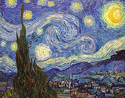

La noche estrellada (neerlandés: De sterrennacht) es un óleo sobre lienzo del pintor postimpresionista neerlandés Vincent van Gogh. Pintado en junio de 1889, representa la vista desde la ventana orientada al este de su habitación en el asilo en Saint-Rémy-de-Provence, justo antes del amanecer, donde incluye un pueblo imaginario. Ha estado en la colección permanente del Museo de Arte Moderno de la ciudad de Nueva York desde 1941, adquirida a través de Lillie P. Bliss Bequest. Ampliamente considerada como la obra maestra del pintor.La noche estrellada es una de las pinturas más reconocidas en la historia de la cultura occidental